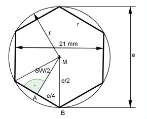

Flächenberechnungen Aufgabe 66 Eine Sechskantschraube hat eine Schlüsselweite von 21 mm. Wie groß ist ihr Eckmaß e?  Es gilt: e = 2 * r Eine Kante hat die Länge r oder e/2. Pythagoras im Dreieck ABM: e e SW e (---)² = (---)² + (-----)² | -(---)² 2 4 2 4 e e SW (---)² - (---)² = (-----)² 2 4 2 e² e² ---- - ---- = 10,5² |*16 4 16 4e² - e² = 1764 3e² = 1764 |:3 e² = 588 |√ e = 24,2 mm